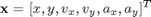
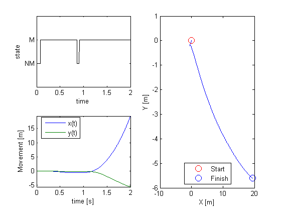
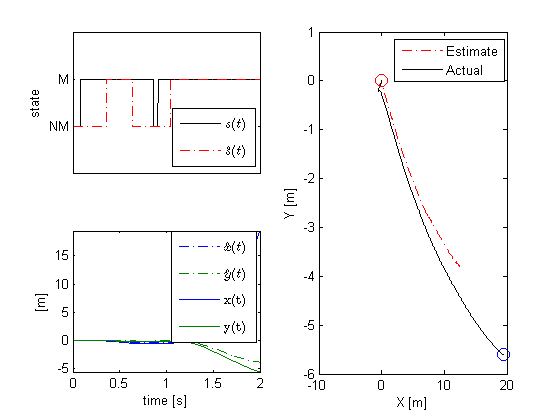

Hybrid Point Process Filter Example
This example is based on an implementation of the Hybrid Point Process filter described in General-purpose filter design for neural prosthetic devices by Srinivasan L, Eden UT, Mitter SK, Brown EN in J Neurophysiol. 2007 Oct, 98(4):2456-75.
Contents
Problem Statement
Suppose that a process of interest can be modeled as consisting of several discrete states where the evolution of the system under each state can be modeled as a linear state space model. The observations of both the state and the continuous dynamics are not direct, but rather observed through how the continuous and discrete states affect the firing of a population of neurons. The goal of the hybrid filter is to estimate both the continuous dynamics and the underlying system state from only the neural population firing (point process observations).
To illustrate the use of this filter, we consider a reaching task. We assume two underlying system states s=1="Not Moving"=NM and s=2="Moving"=M. Under the "Not Moving" the position of the arm remain constant, whereas in the "Moving" state, the position and velocities evolved based on the arm acceleration that is modeled as a gaussian white noise process.
Under both the "Moving" and "Not Moving" states, the arm evolution state vector is

Generated Simulated Arm Reach
clear all; close all; delta=0.001; Tmax=2; time=0:delta:Tmax; A{2} = [1 0 delta 0 delta^2/2 0; 0 1 0 delta 0 delta^2/2; 0 0 1 0 delta 0; 0 0 0 1 0 delta; 0 0 0 0 1 0; 0 0 0 0 0 1]; A{1} = [1 0 0 0 0 0; 0 1 0 0 0 0; 0 0 0 0 0 0; 0 0 0 0 0 0; 0 0 0 0 0 0; 0 0 0 0 0 0]; Px0{2} =.1*eye(6,6); Px0{1} =.1*eye(6,6); minCovVal = 1e-7; Q{2}=[minCovVal 0 0 0 0 0; 0 minCovVal 0 0 0 0; 0 0 minCovVal 0 0 0; 0 0 0 minCovVal 0 0; 0 0 0 0 1 0; 0 0 0 0 0 1]; Q{1}=minCovVal*eye(6,6); mstate = zeros(1,length(time)); ind{1}=1:6; ind{2}=1:6; % Acceleration model X=zeros(size(A{1},1),length(time)); p_ij = [.998 .002; .002 .998]; for i = 1:length(time) if(i==1) mstate(i) = 1+(rand(1,1)>.5); else if(rand(1,1)<p_ij(1,1)) mstate(i) = mstate(i-1); else if(mstate(i-1)==1) mstate(i) = 2; else mstate(i) = 1; end end end st = mstate(i); X(ind{st},i+1) = A{st}*X(ind{st},i) + sqrt(diag(Q{st})).*randn(6,1); end figure; subplot(2,2,1); plot(time,mstate,'k'); axis tight; v=axis; axis([v(1) v(2) 0 3]); xlabel('time'); ylabel('state'); set(gca,'YTick',[1 2],'YTickLabel',{'NM','M'}) subplot(2,2,3); plot(time,X(1:2,1:end-1)); axis tight; xlabel('time [s]'); ylabel('Movement [m]');legend('x(t)','y(t)','Location','Best'); subplot(2,2,[2 4]); plot(X(1,:),X(2,:)); xlabel('X [m]'); ylabel('Y [m]'); hold on; h1=plot(X(1,1),X(2,1),'ro','MarkerSize',10); h2=plot(X(1,end),X(2,end),'bo','MarkerSize',10); legend([h1 h2],'Start','Finish','Location','Best');
Simulate Neural Firing
We simulate a population of neurons that fire in response to the movement velocity (x and y coorinates)
numCells =100; coeffs = [(.1*randn(numCells,1)-4) .0*randn(numCells,2) 4*randn(numCells,2) .002*randn(numCells,2)]; dataMat = [ones(size(X,2)-1,1),X(:,1:end-1)']; % Generate M1 cells clear lambda tempSpikeColl lambdaCIF n; matlabpool open; parfor i=1:numCells tempData = exp(dataMat*coeffs(i,:)'); lambdaData = tempData./(1+tempData); lambda{i}=Covariate(time,lambdaData./delta, '\Lambda(t)','time','s','Hz',{strcat('\lambda_{',num2str(i),'}')},{{' ''b'', ''LineWidth'' ,2'}}); maxTimeRes = 0.001; tempSpikeColl{i} = CIF.simulateCIFByThinning(lambda{i},1,[]); n{i} = tempSpikeColl{i}.getNST(1); n{i}.setName(num2str(i)); lambdaCIF{i} = CIF(coeffs(i,:),{'1','x','y','vx','vy','ax','ay'},{'x','y','vx','vy','ax','ay'},'binomial'); end figure; subplot(2,1,1); plot(time,mstate,'k'); axis([0 Tmax 0 3]); set(gca,'YTick',[1 2],'YTickLabel',{'NM','M'}) xlabel('time'); ylabel('state'); subplot(2,1,2); spikeColl = nstColl(n); spikeColl.plot; set(gca,'ytick',[]); matlabpool close;
Starting matlabpool using the 'local' configuration ... connected to 4 labs. Sending a stop signal to all the labs ... stopped.

Decode the x-y trajectory
% Enforce that the maximum time resolution is delta spikeColl.resample(1/delta); dN = spikeColl.dataToMatrix; dN(dN>1)=1; %Avoid more than 1 spike per bin. % Starting states are equally probable Mu0=.5*ones(size(p_ij,1),1); % Run the Hybrid Point Process Filter [S_est, X_est, W_est, MU_est, X_s, W_s,pNGivenS]=CIF.PPHybridFilter(A, Q, p_ij,Mu0,Px0, dN',lambdaCIF);
Plot the results
close all;
figure; subplot(2,2,1);plot(time,mstate,'k',time,S_est,'r-.'); axis tight; v=axis; axis([v(1) v(2) 0 3]); set(gca,'xtick',[],'YTick',[1 2],'YTickLabel',{'NM','M'}); ylabel('state'); l=legend('$s(t)$','$\hat{s}(t)$','Location','Best'); set(l, 'Interpreter', 'latex'); subplot(2,2,3);plot(time,X_est(1:2,:)','-.'); hold on;plot(time,X(1:2,1:end-1)'); axis tight; xlabel('time [s]'); ylabel('[m]');l=legend('$\hat{x}(t)$','$\hat{y}(t)$','x(t)','y(t)','Location','Best'); set(l, 'Interpreter', 'latex') subplot(2,2,[2 4]); h1=plot(X_est(1,:)',X_est(2,:)','r-.',X(1,1:end-1)',X(2,1:end-1)','k'); hold on; xlabel('X [m]'); ylabel('Y [m]'); plot(X(1,1),X(2,1),'ro','MarkerSize',10); plot(X(1,end),X(2,end),'bo','MarkerSize',10); legend(h1,'Estimate','Actual','Location','Best'); figure; subplot(2,1,1);plot(time,mstate,'k',time,S_est,'r-.'); title('Estimated vs. Actual State and State Probabilities'); axis tight; v=axis; axis([v(1) v(2) 0 3]); set(gca,'xtick',[],'YTick',[1 2],'YTickLabel',{'NM','M'}); ylabel('state'); l=legend('$s(t)$','$\hat{s}(t)$','Location','Best'); set(l, 'Interpreter', 'latex'); subplot(2,1,2); plot(time,MU_est); axis tight; xlabel('time'); ylabel('P(s(t)=i | data)'); legend('P(s(t)=1 | data)','P(s(t)=2 | data)','Location','Best');